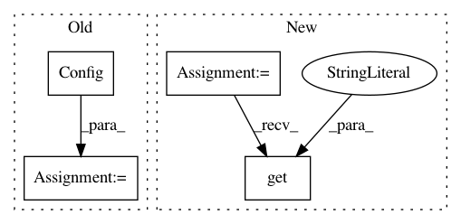

e6629a767b52e1bd4ae63b2ed9fe79ab94f302bf,nni/tools/nnictl/updater.py,,import_data,#Any#,114
Before Change
validate_dispatcher(args)
content = load_search_space(args.filename)
nni_config = Config(get_config_filename(args))
rest_port = nni_config.get_config("restServerPort")
rest_pid = nni_config.get_config("restServerPid")
if not detect_process(rest_pid):
print_error("Experiment is not running...")
return
running, _ = check_rest_server_quick(rest_port)
After Change
validate_dispatcher(args)
content = load_search_space(args.filename)
experiments_dict = Experiments().get_all_experiments()
experiment_id = get_config_filename(args)
rest_port = experiments_dict.get(experiment_id).get("port")
rest_pid = experiments_dict.get(experiment_id).get("pid")
if not detect_process(rest_pid):
print_error("Experiment is not running...")
return
In pattern: SUPERPATTERN
Frequency: 3
Non-data size: 4
Instances
Project Name: Microsoft/nni
Commit Name: e6629a767b52e1bd4ae63b2ed9fe79ab94f302bf
Time: 2021-01-24
Author: 33053116+J-shang@users.noreply.github.com
File Name: nni/tools/nnictl/updater.py
Class Name:
Method Name: import_data
Project Name: mindsdb/mindsdb
Commit Name: d9c0cccfd1eba09b05a89a3281c7cace7fe1af66
Time: 2021-02-09
Author: george@cerebralab.com
File Name: mindsdb/utilities/log.py
Class Name: DbHandler
Method Name: __init__
Project Name: Microsoft/nni
Commit Name: e6629a767b52e1bd4ae63b2ed9fe79ab94f302bf
Time: 2021-01-24
Author: 33053116+J-shang@users.noreply.github.com
File Name: test/ut/tools/nnictl/mock/experiment.py
Class Name:
Method Name: stop_mock_experiment